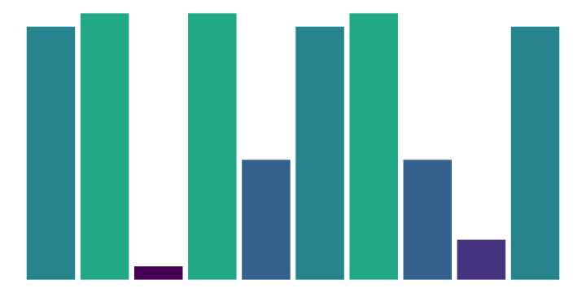
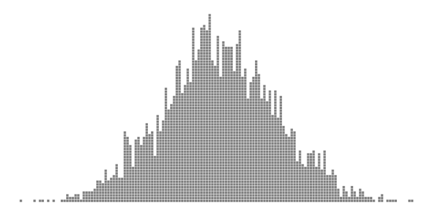
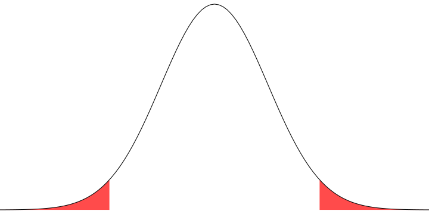
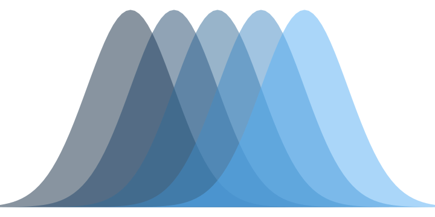

PSYC BC1101
Syllabus
Lectures
Recitation
Extras
Class notes
On this page
1. Course Overview
2. Variables
3. Frequency
4. Central Tendency
5. Variability
6.
\(z\)
-Scores
7. Probability
8. Sampling
9. Hypothesis testing
10. Hypothesis testing pt. 2
11. The
\(t\)
test
12. The
\(t\)
test part 2
13. Independent-samples
\(t\)
test
14. Related-samples
\(t\)
test
15. ANOVA
16. ANOVA pt. 2
17. Related-samples ANOVA
18. Factorial ANOVA
19. Correlation
20. Regression
Lectures
1. Course Overview
Jan 20

Textbook
Lectures
Recitation
Exams
Other stuff
2. Variables
Jan 22
Statistics: Why? How? What?
Measuring things
Populations & samples
Learning checks
3. Frequency
Jan 27
Frequency
Frequency tables
Frequency graphs
Learning checks
4. Central Tendency
Jan 29
Mode
Median
Mean
Distributions
Learning checks
5. Variability
Feb 03
Variability
Range
Sum of squares, variance, SD
Degrees of freedom
Learning checks
6.
\(z\)
-Scores
Feb 05
\(z\)
-scores
Standardized distributions
\(z\)
-scores & making inferences
Learning checks
7. Probability
Feb 10
Probability basics
Sampling
Probability and distributions
Probability and
\(z\)
-scores
Learning checks
8. Sampling
Feb 12

Sampling error
Distribution of sample means
Central Limit Theorem
Learning checks
9. Hypothesis testing
Feb 24

Recap
Making inferences
Hypothesis testing
\(z\)
-test
Learning check
10. Hypothesis testing pt. 2
Feb 26
Inferential errors
Effect size
Statistical power
Learning checks
11. The
\(t\)
test
Mar 03
\(t\)
vs.
\(z\)
The
\(t\)
distribution
The
\(t\)
-test
Learning checks
12. The
\(t\)
test part 2
Mar 05
Research designs
Assumptions
Effect size
Confidence intervals
Learning checks
13. Independent-samples
\(t\)
test
Mar 10
Research design
Calculation
Hypothesis test
Learning checks
14. Related-samples
\(t\)
test
Mar 12
Research design
Equations
Hypothesis test
Assumptions
Confidence interval
Learning checks
15. ANOVA
Mar 31
Intro to ANOVA
Uses of ANOVA
Learning checks
16. ANOVA pt. 2
Apr 02
ANOVA terminology
Calculating ANOVA
Hypothesis test
Post-hoc tests
Assumptions
Learning checks
17. Related-samples ANOVA
Apr 07

Logic
Calculations
Post-hoc tests
Learning checks
18. Factorial ANOVA
Apr 09
Logic
Calculations
Hypothesis test
Interpretation
Learning checks
19. Correlation
Apr 14
Correlational research designs
Correlation statistic
Hypothesis test
Correlation & effect size
Learning checks
20. Regression
Apr 16
Purpose
Equations
Hypothesis test
Learning checks